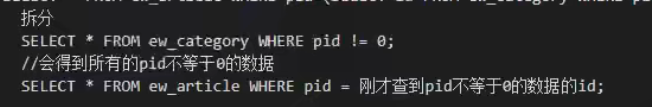

MySQL数据库
MySQL导论
-
MySQL是一个关系型数据库管理系统（RDBMS）,由Oracle企业支持，SQL是它的，开源免费。存储引擎多变，不支持查询取消。
-
如何配置安装启动
-
phpMyadmin
phpMyAdmin是一个以PHP为基础,以Web-Base方式架构在网站主机上的MySQL的数据库管理工具,是免费的Web应用程序;为使用MySQL数据库管理系统提供了方便的GUI,让管理者可用Web接口管理MySQL数据库
访问：localhost/admin
CMD与MySQL
基础符号
登录mysql：
mysql[-h 数据库服务器地址（如果存在本机可不写）-u 用户名 -p 密码吗]退出mysql：
\q
exit
quit用完整格式查看
\G命令执行符（一条语句的结束）
;或者\g清除信息
\c常见符号：
->当前命令没有命令执行符。
'>前面写的SQL语句缺少单引号
编码规范
-
关键字和函数要全部大写
-
数据库名、表名、字段名 全部小写
-
必须以**
;结尾**（命令执行符确认） -
常见的中文字符集设置
-
需要设置
utf8-mb4,否则将乱码utf8国际化标准，亚洲通用字符集，一个汉字占3个字节（1~4字节的编码）GBK中期标准，一个汉字占2个字节GB2312早期标准 -
数据库字符集的依赖关系（逐层查找）
内容字符集->字段字符集->表字符集->库字符集
-
SQL语句
我们每输入一条命令，所跳出来的返回值很重要。命令要简洁，效率优先，能不麻烦就不麻烦。
-
分类
DDL 数据库定义语言（CREAT DROP SHOW ALTER）
DML 数据库操作语言（INSERT DELETE UPDATE)
DQL 数据库查询语言（SELECT WHERE）
DCL 数据库控制语言（权限）
-
系统默认数据库
最好不要动。
information_schema 保存列行表单对象信息
mysql 保存服务器运行信息
performance_schema 保存历史记录信息
sys 类帮助文档
对库的操作
-
创建一个数据库
CREATE DATABASE 库名-
CREATE DATABASE IF NOT EXISTS 库名如果不存在此库，则执行创建操作最好不要在MySQL里写判断语句。判断等逻辑语句在PHP里写就好。
-
-
修改一个数据库
- 没有提供数据库名的修改命令，数据库名一旦创建不能修改。
-
删除一个数据库
DROP DATABASE 库名DROP DATABASE IF NOT EXISTS 库名
-
查询数据库
-
查询所有的库名
SHOW DATABASE -
选择进入一个数据库
USE 库名
-
-
关于库的字符集的查看和修改
-
查询新创建的库所用的字符集
SHOW CREATE DATABASE 库名 -
修改一个库的字符集
ALTER DATABASE 库名 CHARSET 字符集名
-
对表的操作
-
查看所有表
SHOW TABLES(需要进入到那一个数据库中) -
创建一个表
CREAT TABLE 表名( 字段名（行名） 数据类型 列的完整性约束; - - - )[ENGINE=MYISAM DEFAULT CHARSET=UTF8MB4]-
实例

-
-
查询表
-
查询一个表内容
DESC 表名返回的是这个整张表的具体信息。 -
查询一个表的创建信息
SHOW CREATE TABLE
-
-
备份表
CREAT TABLE 要备份的表名 SELECT * FROM 原表名 -
修改一个表的表名
ALTER TABLE 表名 RENAME 新表名 -
删除表
- 删除一张表
DROP TABLE [IF EXISTS] 表名 - 删除多张数据表
DROP TABLE 表名1，表名2
- 删除一张表
对字段的操作
-
添加一个数据字段
ALTER TABLE 表名 ADD 新字段名 [列的完整性约束][位置参数]- 位置参数：
- 不写默认为在末尾插入
FIRST在表的第一行插入AFTER 字段列名在某一字段行的之后插入
- 位置参数：
-
修改一个数据字段
-
ALTER TABLE 表名 MODIFY 字段名 字段类型 [列的完整性约束]注意：使用
MODIFY关键字，只能修改此字段的内容。 -
ALTER TABLE 表名 CHANGE 新字段名 新字段类型 [列的完整性约束]注意：使用
CHANGE关键字，可以更改字段名，但必须连着后面的也要再写一遍。
-
-
删除字段
-
ALTER TABLE 表名 DROP 字段名 -
ALTER TABLE 表名 DROP 字段名1，DROP 字段名2；
-
-
查询字段
DESC 表名
字段约束
-
只能用于数值类型
UNSIGNED更改为无符号类型。（默认为有符号）ZEROFILL在数值之前自动用0补充不足位。AUTO_INCREMENT设置自动增量（如每行递增加一），若设此量，则一定要把这个属性设为主键
-
PRIMARY KEY主键约束每张表中只能存在一个主键，起着唯一标识的作用。
-
NULL和NOT NULL若默认值为
NOT NULL，则必须要在此字段中插入值。 -
DEFAULT指定默认值
基础数据类型约束
跟钱相关的一般采用DESIMAL类型，这样会更精确

非常也不常见。
字符串：新版本，一个汉字占用一个字节。
定长字符串 ：空白的自动占位存储，好查询，占空间。
变长字符串：空白的不存储，查询可视困难，不占空间
BLOB: 此类型可以以二进制的数来存储图片。
- 一些关于类型的常识语法
- MySQL中默认存储带符号值类型的。（如果这个类型包含正负的话）
float(6,2)表示最大输入6位，小数保留2位。
（最重要）对内容进行操作
-
添加数据内容
-
添加一条（一行）数据
-
指定表中哪一些字段添加哪一些值
字段名中使用的是反引号`,为了防止关键字报错
value后面的值一一对应
INSERT INTO 表名（`字段名1`,`字段名2`,_）VALUES(`值1`,`值2`); -
添加表中所有字段的值
所有值必须按表中顺序一一对应
INSERT INTO 表名 VALUES (`值1`,`值2`,`值3`) -
添加多条数据：

-
-
修改数据内容
UPDATE 表名 SET 字段名 = 值，字段名=值[修改条件WHERE]所有的修改条件
DELETE里能用的UPDATE里也可以用 -
删除数据内容
DELETE FROM 表名 [删除条件]一定要写删除条件，不然整个数据都被删除了。
WHERE条件
OR和AND的逻辑BETWEEN AND在什么和什么数之间
-
查询内容（属于DQL）
SELECT * FROM 表名
*表示匹配所有字段-
SELECT 字段名1，字段名2，字段名3 FROM 表名 -
使用
as关键字起别名：SELECT a.id,a.username,a.age as haha FROM user as a; -
使用
WHERE进行约束IN包含和NOT IN不包含 -
正则匹配：（万不得已才考虑）
SELECT * FROM user WHERE username REGEXP 'g$';--表示以g结尾
SELECT * FROM user WHERE username REGEXP ‘^X.+$';
- **`LIKE`模糊匹配** `%`占位，为任意多个内容 `_`占位，为任意一个内容  `_`表示任意的**一个**字符 - `COUNT(字段)`查询个数 `SELECT COUNT(*) FROM 表名`  - `ASC`（正序），`DESC`倒叙，排序查询 `SELECT * FROM 表名 ORDER BY 字段 ASC(DESC);`  有顺序`WHERE->ORDER BY->ASC` -
LIMIT限制查询数量SELECT 字段 FROM 表名 [WHERE] [ORDER BY] [LIMIT]LIMIT 查询数量
-
LIMIT 越过几条，取出几条 -
GROUP BY分组查询SUM(字段名)求此字段名的和COUNT(字段名)求此字段名的数量-
HAVING效率较低一般只是使用在分组里面做二次过滤，使用方法和
WHERE一样。 -
多表联合查询
SELECT 表1.字段，表2.字段 FROM 表1，表2 WHERE 表1.字段=表2.字段- 做连接查询、右连接查询
-
总结
SELECT 语句 [WHERE条件] [GROUP BY条件][HAVING 条件] [ORDER BY 条件][LIMIT条件]
顺序
对内容操作查询数据体系补充
-
限制语句总结
-
这些语句可跟在
WHERE后面，也可跟在group by后面 -
BETWEEN AND之间 -
比较运算符 = > <优先级最大NOTANDOR优先级最小 -
INNOT IN枚举里面选 -
LIKENOT LIKE模糊匹配占位符
%_可加
ESCAPE '\'表示定义转义字符（如果需要前面模糊匹配的内容里需要匹配的是转义后的关键字符） -
IS NULLIS NOT NULL
-
-
GROUP BY分组查询如果写了group by，那么group by
前：只能用聚集函数,或者按什么列分组的那一列。（不能出现其他列）
后：限制条件只能用
having(不能用where)-
聚集函数
SUM()AVG()COUNT()MAX()MIN() -
having和where的区别having 作用在group by 分组后，having后才可出现聚集函数
where作用于整张表
-
-
DISTINCTSELECT DISTINCT 列名 FROM 表名 --把相同的行去掉了 SELECT COUNT(DISTINCT 列名) FROM 表名 --把相同行去掉的统计数 -
.字符链接运算符SELECT 列名+' '+'is a'+' '+job
其他查询（除上面单表查询外的）
-
嵌套查询
-
IN一般用于不相关子查询这一分类--查询选修了课程2的学生姓名 SELECT sname --外层查询/父查询 FROM studinfo WHERE sno IN (SELECT sno --内层查询/子查询 FROM sc WHERE cno=‘2’) -
EXISTS一般用于相关子查询这一分类查询选修了课程2的学生姓名 SELECT sname 外层查询/父查询 FROM studinfo WHERE EXISTS (SELECT * 内层查询/子查询 FROM sc WHERE cno=‘2’ AND sno = studinfo.sno) -
带有比较运算符的子查询
-
ANY（任意值）和ALL（所有值）的子查询--查询其他系中比IS系某一学生年龄小的学生姓名、年龄（按年龄递减） SELECT sname,sage FROM studinfo WHERE sage < ANY (SELECT sage FROM studinfo WHERE sdept =‘IS’) AND sdept <>‘IS’ ORDER BY sage DESC
-
-
连接查询
- 等值连接和非等值连接
- 自身连接（设
as别名） - （左、右）外连接和内连接
- 复合条件连接
- 多表连接后查询
-
集合查询
-
UNION并操作其两边都是select语句。
注意：ORDER BY子句只能用于对最终查询结果排序，不能对中间 结果排序，只能出现在最后。
-
编写数据设计说明书及数据表设计
常识
图片存储的数据类型：char（37）
因为图片储存都是经过加密的，且返回的字符串永远是32个字节，再加上最长后缀“.jpeg”，就是37字节
流程和设计示例
-
看项目需求报告
-
找实体，找属性，找关系（画E-R图，局部E-R图 –> 整体E-R图）
全局实例：
局部实例：
-
确定关系模式（文字描述，标出主键外键）
-
搭建库-做表（架构）
实例1：

实例2：
实例3：

- 最后的代码行要指定引擎
ENGINE和字符集CHARSET - 设置字符串型的默认值为空字符串
DEFAULT ''
- 最后的代码行要指定引擎
-
向表中填充数据
SQL语句的网站应用
首页中的SQL语句的应用
-
SQL函数和其他一些基础语句
unix_timestamp()获取当前时间戳md5()密码加密函数
SHOW WARNING如果在cmd中报出警告- 一般在建表的时候都会给所有的字段一个默认值，因为后续填充数据的时候，不可能每条语句都用到，没有用到的语句会发出警告。
-
注册用户：
注册即在数据库里插入一条数据。
INSERT INTO EW_USERS(username,pwd,addtime) VALUES('xiaoming',md5('xiaoming'),获取当前时间戳) -
登录
登录即在数据库中查询那条数据
SELECT * FROM ew_user WHERE username='xiaoming' AND pwd=md5('xiaoming') -
栏目(层级)查询
-
查询顶级栏目
最顶层的栏目时pid是为0的。
SELECT * FROM ew_category WHERE pid = 0; -
查询子栏目
pid表示层级。
下一层的pid为上一层（其父层）的id
SELECT * FROM ew_category WHERE pid=(SELECT id FROM ew_category WHERE pid=0); -
最新文章
“最新”表示要按时间排序->转为按插入顺序逆序（插入最迟说明最新）;而在此种情况下，id的大小可以反映插入顺序
SELECT * FROM ew_article ORDER BY id DESC LIMIT 15 -
技术要闻，查询技术栏目中最新的10篇文章
SELECT * FROM ew_article WHERE pid=栏目表中技术要闻的id ORDER BY id DESC LIMIT 5; -
一号广告位：
SELECT * FROM ew_poster WHERE position=0 ORDER BY id DESC LIMIT 1; -
公告：
SELECT * FROM ew_notice WHERE display=1 AND 当前时间戳>starttime AND 当前时间<endtime ORDER BY id DESC LIMIT 5; -
查询栏目对应的文章列表(子子文章)
两个查询语句的嵌套

SELECT * FROM ew_artical WHERE pid=(SELECT id FROM ew_category WHERE pid!=0);
- 友情链接 ```sql SELECT * FROM ew_link WHERE status=1 ORDER BY ord DESC LIMIT 10; -
后台功能模块业务编写SQL
-
用户管理
-
添加、查询（分页）用户
分页用
LIMIT跳段查询用
LIKE模糊匹配
-
用户权限和编辑用户

-
-
栏目管理
CONCAT(a，b)将两个链接起来，形成一个单一的字符串 -
内容管理
-
评论管理
注意联合查询的使用方法
-
广告管理
-
友情链接

总结
重点掌握：
- 对库、对表、对字段、对内容进行的增删改查四种操作
- 在php操作是传入的是“xxxxsql语句xxxx{php变量}”这样的写法
- 系统的sql语法